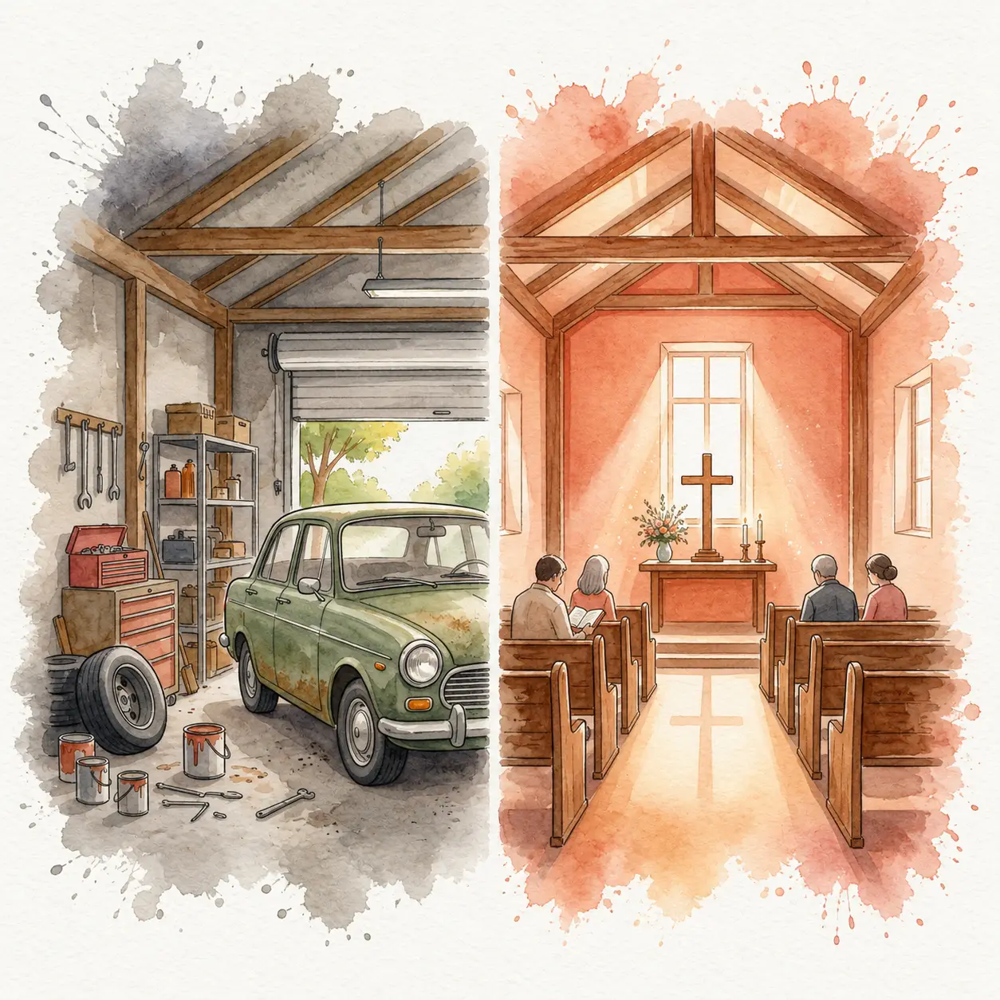
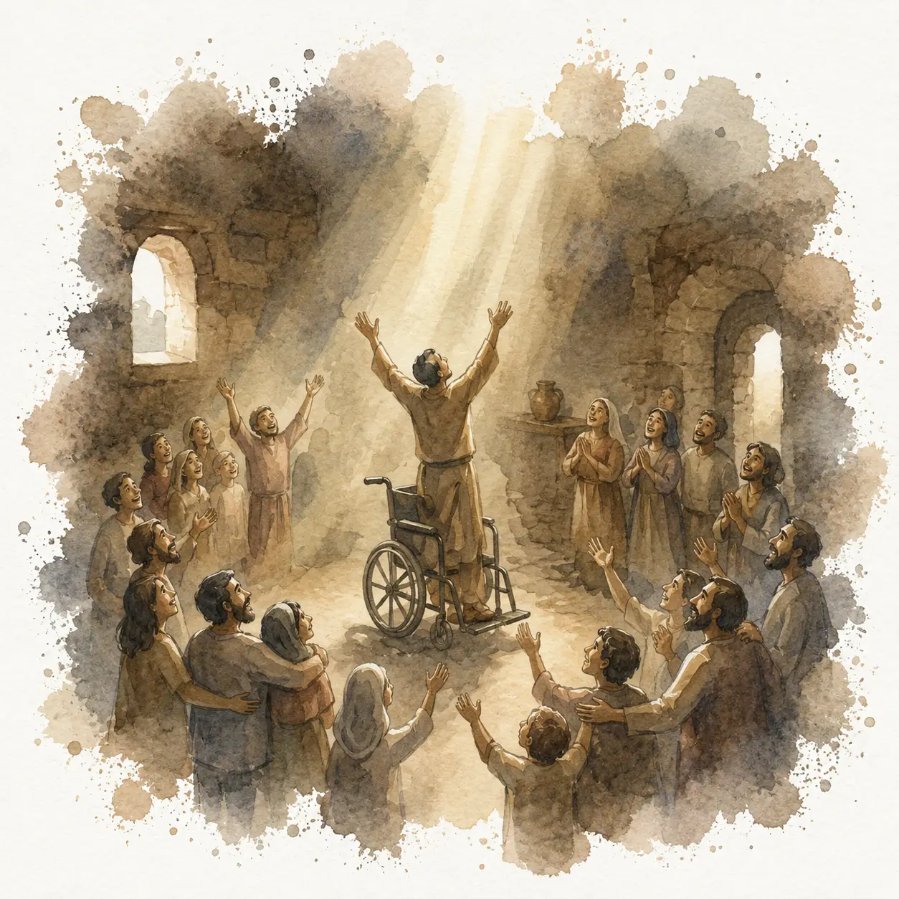
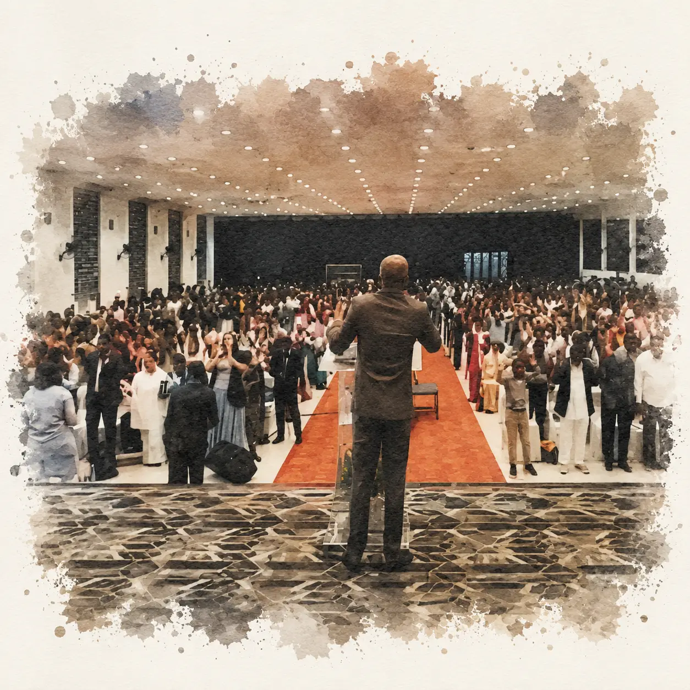

The Church is Established
Shekinah Gospel Prayer Fellowship, DJ Halli was officially established, marking the culmination of a journey that began with a simple, powerful seed of faith.
From a seed of faith to a flourishing fellowship — every milestone shaped by God's grace.
Shekinah Gospel Prayer Fellowship, DJ Halli was officially established, marking the culmination of a journey that began with a simple, powerful seed of faith.
Pastor Deena Dayalan was serving as a part-time minister while working at the Reserve Bank of India. With only 26 days left until retirement and a guaranteed pension, God called him to resign. In faith, he obeyed — surrendering security for full-time ministry.

The property, once a garage holding an Ambassador car and old fridges, belonged to an owner who had received a vision from God that it would one day become a place of worship. God spoke the same to Pastor Deena Dayalan, and the two visions aligned perfectly.
The church began with just 30 people. God moved powerfully — delivering the demon-possessed, lifting families from poverty, redeeming the addicted, and drawing many young people out of secret sins into salvation through Christ.

God performed great healings through this ministry; people came in wheelchairs and left walking. The congregation grew from 30 to 60, then to 120, and services expanded from one to two, then three.

Today, Shekinah Gospel Prayer Fellowship stands with over a thousand baptisms, multiple services, and multiple branches. All glory belongs to God alone — Acts 4:12.

Joyson Sridhar Dayalan was dedicated to the work of the Lord from childhood. After completing his B.Com degree, he committed himself to full-time ministry in 2008 following a season of deep spiritual transformation, during which God stirred his heart, broke old bonds, and birthed within him a strong desire for the work of the Kingdom.
In 2008, Pastor Joyson moved to Maine, where he underwent four years of biblical and theological training at Faith School of Theology. Upon returning to India in 2012, he began serving alongside our founding pastor, faithfully laboring in ministry and shepherding the church.
He was ordained as a pastor in 2014 and, following the passing of our founding pastor, became the Lead Pastor in 2020.
Pastor Joyson carries a vision to see thousands transformed by the Gospel and added to the church through our DJ Halli campus and to see many more churches planted for the glory of God. His passion is to see the Kingdom of God established through the faithful preaching of the Word and through the transforming, supernatural work of God in the lives of people.
"How good and pleasant it is when God's people live together in unity!"Psalm 133:1